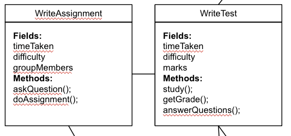
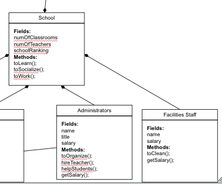
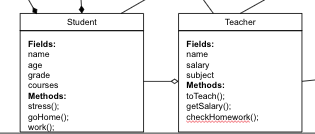
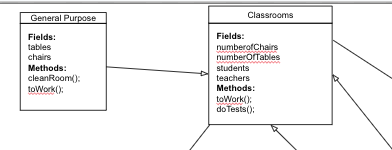

UML diagrams are a blueprint for the program. They allow for the programer to map all of the classes and their connections to one another.
UML diagrams can show the programmer how all classes interact and work with each other. Each class represents one box with 3 parts:
the name of the class, the class fields (name and type), and the methods (name, type, and parameters)
Associations are different ways as to how the classes relate to each other.
Association is used when there are 2 classes which are somewhat related. The connection is represented by a simple line.
In this example writeAssignment and writeTest are both classes that the student does which makes them related and ultimately why association was used.
Composition is used when 1 class is dependent on another so they cannot exist without one another. The connection is represented by a diamond arrow facing the class that is made up of the other.
In this example administrators and facilities staff will not be possible without the school which is why composition is used
Aggregation is used when the classes can exist independently, but they are still made up of each other. The connection is represented by a hollow diamond arrow facing the class that is made up of the other.
Student and teacher can exist independently; however, they still rely on one another which is why aggregation is used.
Generalization essentially inheritance where there is a superclass and subclasses. The subclasses have the same fields and methods as the superclass and the connection is represented with a hollow arrow pointing to the class that is more general.
General purpose is a subclass of the super class classrooms which is why generalization was used